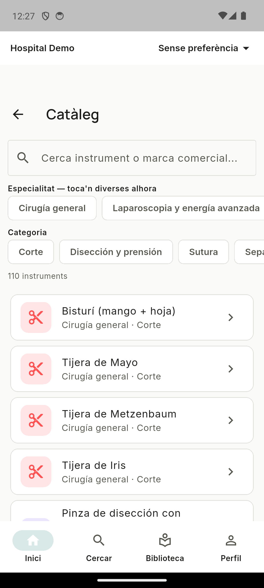

Acceso libre
El catálogo y el aprendizaje básico no requieren cuenta ni pago. Nadie se queda fuera por no tener presupuesto.
Instriq reúne instrumental, protocolos y la experiencia real del bloque quirúrgico en un solo lugar, accesible desde cualquier tablet o móvil — para que aprender a moverse en quirófano no dependa de una carpeta de papel desactualizada.
Incorporarse a un bloque quirúrgico exige adquirir muchísimo conocimiento práctico en poco tiempo. Instriq existe para que cualquier instrumentista, enfermera, auxiliar o miembro del equipo quirúrgico encuentre información fiable, actualizada y basada en la experiencia real de otros profesionales — no en un manual genérico.
A largo plazo, que Instriq sea el lugar donde el conocimiento compartido, la colaboración entre profesionales y la tecnología abierta ayuden a mejorar la formación, la seguridad del paciente, la práctica clínica y la investigación médica en hospitales de todo el mundo.
Cada aportación construye una base de conocimiento más completa y revisada para toda la comunidad. Cuantas más personas compartan su experiencia, mejor la información disponible para todas.
El catálogo y el aprendizaje básico no requieren cuenta ni pago. Nadie se queda fuera por no tener presupuesto.
Código abierto, decisiones públicas y, a futuro, cuentas claras de cómo se usa cada donación.
Construido con profesionales sanitarios y desarrolladores voluntarios, no por una empresa cerrada.
Buscamos alinearnos con estándares reconocidos del sector (HL7, FHIR, DICOM) según el proyecto lo necesite.
El aprendizaje básico funciona como invitado. Solo hace falta cuenta si tu grupo quiere compartir su propio conocimiento.

+70 instrumentos organizados por 9 especialidades y por categoría funcional, con nombres comerciales y fabricante.
Flashcards y quiz de repaso, con progreso guardado en tu propio dispositivo.
Instrumental específico por cirujano y procedimiento, compartido y validado dentro de tu grupo.
Interfaz en català (por defecto), castellano e inglés; auditoría completa de cada acción; una red de conocimiento que conecta instrumental, técnicas y protocolos entre sí; y analítica de comunidad agregada y anónima.
Comparte el instrumental y las técnicas de tu equipo dentro de tu grupo, ayúdanos a revisar contenido del catálogo, o dinos qué protocolo o guía te falta.
El código es público. Flutter (Android/iOS/Web) + Supabase. Empieza por el README del repo.
Instriq lo impulsa un pequeño equipo inicial, pero su crecimiento depende de una red de profesionales sanitarios, docentes, investigadores y desarrolladores que colaboran de forma voluntaria y sin ánimo de lucro. Si quieres formar parte, escríbenos.
Cuando haya suficiente actividad, publicaremos aquí de forma agregada y anónima: el instrumental más consultado, las especialidades con más actividad, los protocolos más leídos, y las guías que la comunidad más está pidiendo.
Instriq acaba de empezar — todavía no hay datos de uso que mostrar. Sé de las primeras personas en construir esta comunidad. Cuando exista este apartado, será agregado y respetuoso con la privacidad: nunca datos individuales de una persona o un grupo concretos.
El nombre y la marca "Instriq" quedan reservados para proteger la identidad del proyecto y evitar usos que confundan a la comunidad — el código en sí es libre bajo AGPL-3.0.
A largo plazo habilitaremos donaciones completamente transparentes, con el destino de cada aportación publicado: mantener la infraestructura y los dominios, cubrir servidores, desarrollar nuevas funcionalidades, integrar estándares e inteligencia artificial, y apoyar proyectos de investigación médica y biomédica que repercutan en una mejor atención a los pacientes.
Todavía no hay un sistema de donaciones activo. Cuando lo haya, la distribución de fondos será pública, indicando el destino de cada aportación y las investigaciones apoyadas.